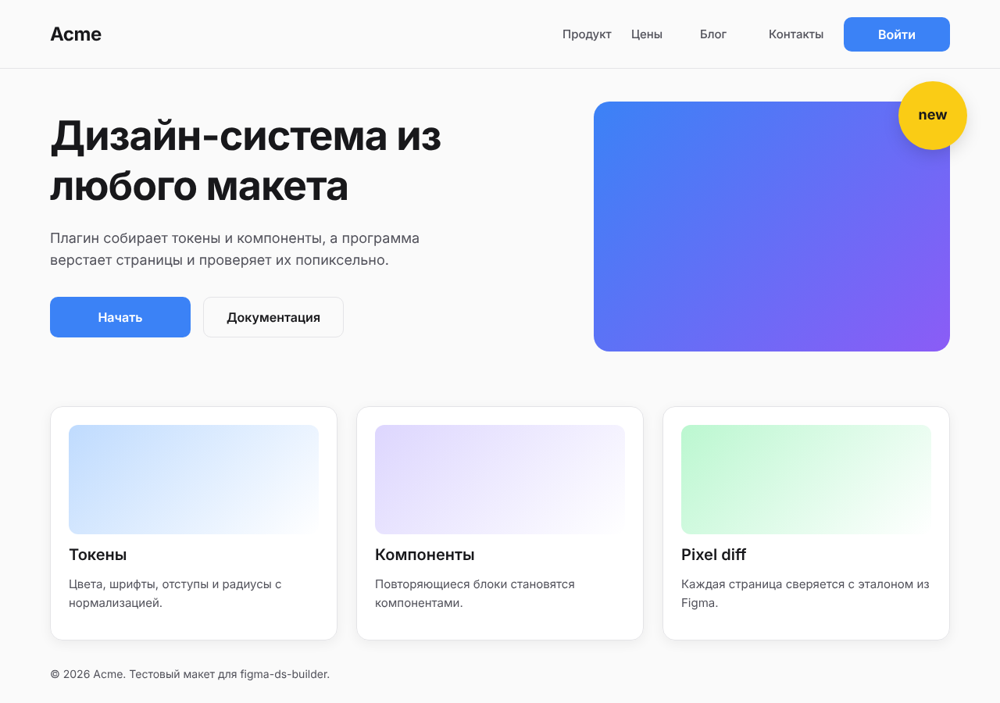

Вёрстка из Figma, проверенная по эталону
Плагин выгружает макеты. Программа на вашем компьютере строит из них дизайн-систему, верстает страницы и сверяет каждую с макетом: положение каждого элемента и каждый пиксель. Подходит и для макетов без стилей, компонентов и Auto Layout.
Landing / Desktop — тестовый макет, заголовок сдвинут на 2 px

Как это работает
Плагин только выгружает данные. Анализ, вёрстка и сверка идут локально, макеты никуда не отправляются.
Шаг 1, в Figma
Выгрузите макеты плагином
Одна кнопка, на выходе zip-пакет:
- PNG каждого макета как эталон
- слои с координатами, заливками, тенями, Auto Layout и текстами
- векторы, картинки, шрифты, переменные и стили
Шаг 2, на компьютере
Запустите ds-build
Одна команда:
- строит дизайн-систему: цвета, текст, отступы, аудит
- верстает каждый макет на её токенах
- сверяет с эталоном в Chrome и дорабатывает расхождения
Шаг 3, результат
Получите вёрстку и отчёт
Можно сразу работать дальше:
- HTML и CSS каждой страницы
- отчёт с наложением и картой различий
- токены для CSS, SCSS и Tailwind, а в Figma — переменные
Что значит «совпадает с макетом»
Геометрия ±0.5 px
Каждый элемент вёрстки связан со своим слоем в Figma и совпадает с ним по положению и размеру. Ошибка раскладки в 1 px не пройдёт, а отличия в отрисовке шрифтов на эту проверку не влияют.
Пиксели 0.1% и 0.5%
Скриншот страницы сравнивается с PNG из Figma. Вне текста допускается не больше 0.1% несовпадающих пикселей, в тексте не больше 0.5%: Figma и браузер по-разному рисуют пары букв. Пороги настраиваются.
Что делает программа
Всё на алгоритмах, без ИИ: повторяемо, бесплатно и проверяемо.
Дизайн-система из любого макета
Склеивает почти одинаковые цвета и называет их по шкале 50–950, определяет роли: фон, текст, граница, фирменный. Находит стили текста, шаг отступов, радиусы, тени и брейкпоинты.
Раскладка на flex
Auto Layout переносит как есть. Где его нет, строит колонки и строки по положению слоёв. Абсолютное позиционирование остаётся только для слоёв, которые перекрываются.
Сверка и автодоработка
Измеряет каждый элемент в браузере, сравнивает скриншот с PNG из Figma и показывает, какие слои дают расхождение. Для них подбирает поправки и оставляет только те, что приближают к эталону: на реальных макетах расхождение падает с 1.98% до 0.38%.
Компоненты, React и Vue
Повторяющиеся блоки становятся компонентами, различия между копиями — пропсами. С флагом --framework react,vue получаете проекты на Vite, и каждая страница сверяется с HTML-версией.
Адаптивные страницы
Макеты одной страницы под разные ширины, например «Home / Desktop» и «Home / Mobile», собираются в одну страницу с брейкпоинтами. На ширине каждого макета она совпадает с ним пиксель в пиксель.
Семантика без ИИ
Шапка, подвал, меню, кнопки, ссылки и заголовки получают свои теги по правилам. Повороты и маски переносятся точно. Имена классов можно доверить локальной модели флагом --ai.
Отчёт
По каждой странице: прошла ли проверку, наложение со шторкой, карта различий, проблемы контраста текста по WCAG.
Обратно в Figma
Токены импортируются кнопкой в плагине: переменные, текстовые стили и стили теней. Повторный импорт обновляет их, а не дублирует.
Установка
Один раз, около пяти минут. Нужны Figma Desktop, Node.js 20 или новее и Google Chrome. Работает на macOS, Windows и Linux.
Скачайте и подготовьте
Команды установят зависимости программы и соберут плагин.
git clone https://github.com/nurgeldiserikbay/figma-ds-builder
cd figma-ds-builder
npm run setupПодключите плагин
В Figma Desktop: Plugins, Development, Import plugin from manifest, затем файл packages/plugin/dist/manifest.json. Плагин появится под названием «DS Builder — экспорт для вёрстки».
Локальные плагины работают только в приложении Figma для компьютера.
Проверьте установку
Необязательно. Тесты программы и плагина на встроенном макете занимают около минуты.
npm testРабота с макетом
От выгрузки до проверенной вёрстки за несколько минут.
Выгрузите макеты
Запустите плагин, выберите выделенные фреймы, страницу или весь файл, масштаб 1×, и нажмите «Пакет для вёрстки». Скачается <файл> — ds-package.zip.
Для скриншот-тестов есть кнопка «Только PNG макетов».
Соберите и проверьте
Программа скачает бесплатные шрифты макета, построит дизайн-систему, сверстает и сверит каждую страницу, затем откроет отчёт.
npm run ds -- build "<файл> — ds-package.zip" --out out/my-site --openПосмотрите результат
Отчёт лежит в out/my-site/report.html, вёрстка страниц в out/my-site/<фрейм>/index.html, адаптивные страницы в <имя>.responsive/, дизайн-система в out/my-site/design-system/.
# только дизайн-система, без вёрстки
npm run ds -- analyze "<файл> — ds-package.zip" --out out/ds
# ещё и проекты React и Vue
npm run ds -- build "<файл> — ds-package.zip" --out out/my-site --framework react,vueВерните дизайн-систему в Figma
В плагине выберите design-system/tokens.json и нажмите «Создать переменные и стили». Появятся коллекции переменных, текстовые стили и стили теней.
Результаты на открытых макетах
5 файлов Figma с GitHub, 14 фреймов, около 1 300 слоёв. Для двух фреймов авторы выложили PNG-экспорт из Figma, это настоящие эталоны.
| Макет | Размер | Слоёв | Геометрия | Расхождение с эталоном |
|---|---|---|---|---|
| HackRPI, страница «спасибо» v2.1, без Auto Layout | 1440 × 1024 | 28 | 28 из 28 | 1.977% до, 0.381% после |
| HackRPI, страница «спасибо» v3 | 1440 × 1970 | 35 | 35 из 35 | 1.679% до, 0.209% после |
| Physionic, сайт клиники, desktop | 1440 × 5007 | 446 | 446 из 446 | эталона нет |
| Physionic, mobile | 414 × 9806 | 423 | 423 из 423 | эталона нет |
| Physionic, обзорная страница | 2624 × 2391 | 497 | 497 из 497 | эталона нет |
| HackRPI, ещё 7 фреймов: Discord, команда, практика | 360–1680 | 2–45 | все совпали | эталона нет |
Дизайн-система Physionic, построенная по макету, совпала с SCSS-переменными автора шаблона в 14 проверках из 14: фон, поверхность, оба цвета текста, акцент, палитра и шаг отступов. Подробности в отчёте о проверке, повторить прогон можно командой npm run bench.
Принципы
Сначала алгоритм
Всё, что можно решить кодом, решается кодом. ИИ появится только для задач на понимание и будет проходить ту же проверку с откатом, если стало хуже.
Плагин только выгружает
Вся логика в программе, где её можно тестировать без Figma. Плагин отдаёт данные и записывает обратно то, что программа построила.
Готово значит проверено
Страница не считается готовой без сверки с эталоном. Если проверка не прошла, отчёт показывает, где и почему.
Пока не умеет
- Сложные булевы операции над векторами выводятся картинкой SVG.
- Между брейкпоинтами страница не «резиновая»: показывается ближайший меньший макет по центру.
- Платные шрифты нужно установить в систему самостоятельно.
- Плагин проверен на имитации Figma API, первый запуск в настоящей Figma впереди.
Дальше по плану
- Прогон на рабочих макетах и уточнение порогов.
- Абсолютное позиционирование только для узла с расхождением, а не для всей страницы.
- Резиновая вёрстка между макетами разной ширины с проверкой на каждой ширине.
- ИИ для имён компонентов и спорной семантики: локальная модель уже есть, дальше бесплатные API.
- Окно приложения вместо командной строки.
Вопросы
Макеты куда-то отправляются?
Нет. Плагин не обращается к сети, программа работает на вашем компьютере. Из интернета скачиваются только бесплатные шрифты из npm, один раз в локальный кэш.
Нужен ли ИИ или платные сервисы?
Нет. Анализ, вёрстка, семантика, компоненты, сверка и доработка работают без ИИ. ИИ подключается флагом --ai и только предлагает имена классов: по умолчанию это локальная модель через Ollama, подойдёт и любой OpenAI-совместимый сервер. Результат всё равно проходит проверку.
Что если в макете нет стилей и Auto Layout?
Это основной сценарий. Дизайн-система собирается из значений, которые реально используются, а раскладка определяется по положению слоёв. Уменьшенные копии экранов распознаются и не попадают в шкалы.
Зачем нужен Chrome?
Вёрстка проверяется в настоящем браузере: страница отрисовывается в Chrome, каждый элемент измеряется, скриншот сравнивается с эталоном. Используется уже установленный Chrome. Если он стоит в нестандартном месте, укажите путь в переменной CHROME_PATH.
Можно ли без Figma?
Для проверки алгоритмов да: packages/bench собирает пакет прямо из файла .fig. Но эталоны PNG и полные данные даёт только плагин.
Что прислать, если что-то не сработало?
Текст ошибки из терминала, консоль плагина (Plugins, Development, Show/Hide console), файл report.json и, если можно, сам пакет или один проблемный фрейм.
Проверьте на своём макете
Установка, выгрузка, вёрстка и отчёт занимают 10–15 минут.